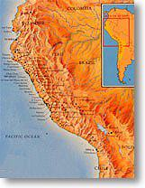
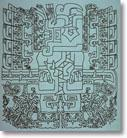

| Chavín de Huántar is a site representative of early monumentality, and by extension, early leadership, if we infer that the large amount of labor involved in massive construction was coordinated by, and probably mandated by the governing structure. If this is the case, then the characteristics and growth patterns of these early centers should reflect some aspects of that leadership, and the strategies of governance in which architecture played a part.
Chavín dates to around 1000-200 B.C. (if not earlier), a period called the Early Horizon, when elaborate ceramics, textiles, and sculpted stone found in larger sites throughout much of the Central Andes (modern day Peru) demonstrate a certain level of stylistic unity. At first it was thought that this broad distribution of similar art was evidence for a strong state-like political leadership, but little evidence has been found for the unified, beaurocratic, and military organization typical of evolved states.
 Rather, Chavín sits squarely in the transition from societies based on relatively egalitarian relations (in which people are fairly close to equal in status and power, and permanent leadership is rare), and states, which are based on intrinsic differences in rights and power between individuals and segments of the population, and a strong, usually hereditary leadership of pervasive control.
|